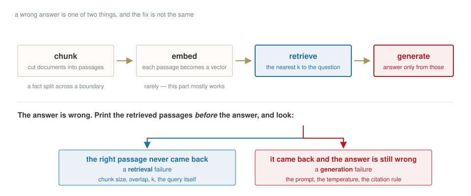
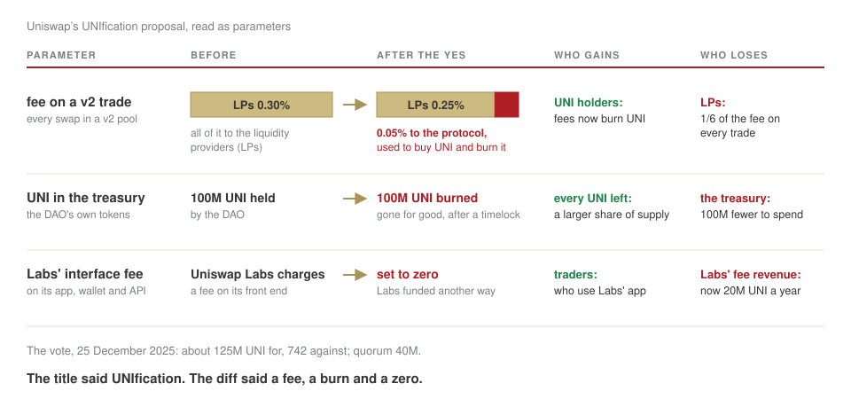

In crypto, the documents are the product.
Week 7 · Thursday 19 November 2026 · 15:00–17:00 · make-up
AI for Business and FinTech · European School of Economics, Florence
Where we are
| 1–5 | 23 Sep – 4 Nov | a model’s release · tokens · look first · read first · agents and harnesses ✓ |
| Mid + 6 | Wed 18 Nov | the oral · crypto from the ledger up · the capstone ✓ |
| 7 | Thu 19 Nov · 15:00 | AI that reads |
| 8 | Wed 25 Nov | AI that looks at the data |
| 9 | Thu 26 Nov · 15:00 | AI that acts |
| 10 | Wed 2 Dec | capstone studio |
| Rev. | Wed 9 Dec | final presentation |
Today: three real documents, ten questions, and you answer every one before the model does.
Last session, in one slide
The ledger is the currency. Each block carries the fingerprint of the one before: change the past and every later block breaks. A wallet holds a key, not money, and there is no help desk.
A stablecoin is a promise with a reserve behind it. A DEX is a pool and x·y = k. A loan with no banker: the collateral is the credit check.
Where does the yield come from? A borrower, a trader’s fee, or a token printed by the box.
At every step, three verbs for AI: it reads, it looks, it acts. Today it reads.
Today
| 15:00 | where we are · the four boxes, once more |
| 15:10 | the documents crypto runs on — four kinds, how each is read wrong, one claim checked |
| 15:30 | lab — three documents, ten questions, three traps |
| 16:25 | MiCA in 30 minutes — the law that made a white paper a legal document |
| 16:55 | could this be your capstone? · three lines |
One notebook on your laptop, one sheet next to it. You answer first; the model answers second.
In crypto, the documents are the product.
No factory, no branch, no shop. A token is a white paper, some code and a vote. Read those and you have read the business, and a model can almost do it for you.
Week 4 in one picture

And the third row, worse than both: a right answer with no passage behind it, which is memory. On a token launched last month, memory is not just unverified. It is empty, and the model fills it anyway.
Part 1 The documents crypto runs on
Four documents, four authors
The white paper: from a pitch to evidence
Bitcoin’s white paper was nine pages addressed to nobody in particular. By 2017, a white paper was how you raised money: a PDF, a website, a token sale.
Under MiCA the same PDF is a legal document. It has a fixed structure, it is sent to a regulator, the management signs it, and holders can sue if it misleads them.
The question for the AI changes with it: no longer “summarise this”, but “where does it say that, and is it allowed to say it?”
The governance proposal: a vote that rewrites the rules
Remember the box: it issues an X token, and X holders vote on what the box does. ▶ Coffeezilla
That vote is a governance proposal. First a forum post, then a temperature check, then a vote on-chain. If YES wins, code changes a number.
The question is never “is this a good proposal?” It is four lines:
the parameter · before → after · who gains · who loses
What does a YES vote change?
Uniswap, December 2025. A v2 pool charges 0.30% on every trade, and all of it goes to the liquidity providers. The proposal switches on a protocol fee of 0.05%, taken out of that 0.30%.
Bet
A $1 million trade in that pool. How much do the LPs get before the vote, and how much after? Where does the rest go?
$3,000 before. $2,500 after, and $500 buys UNI and burns it. One vote moved a sixth of every LP’s fee to the token holders.
UNIfication, read as parameters

The audit report: what was checked, and what was not
A security firm reads one version of the code and lists what it found. Each finding gets a severity and a status: fixed, partly fixed, or acknowledged and left as it is.
Uniswap v4 core, July 2024, by OpenZeppelin: 16 issues · 12 resolved · 2 partially resolved.
Bet
How many of the 16 are not fully fixed?
Four: the 2 partially resolved and the 2 left open. The quick answer is two.
An audit is not a certificate. It is a dated list, for one commit, written by a firm the project paid. Ask which commit, what was out of scope, and what is still open.
The reserve report: a photograph, not a promise
Circle publishes a monthly report on the reserves behind USDC, checked by an accounting firm. The reserves are mostly short-term US Treasury bills and overnight repos, plus cash in banks.
In March 2023, part of that cash was at Silicon Valley Bank. Every report could have been accurate, and USDC still fell to about $0.88 over a weekend.
Question
So what should the AI be asked? Not “is it backed?” but: backed by what, held where, on which date?
“Fully backed”
For years Tether’s website said that every USDT was backed one to one by dollars in its bank accounts.
In October 2021 the US CFTC fined Tether $41 million. Over 26 months, 2016 to 2018, Tether had held enough dollars to back every token in circulation on only 27.6% of the days; the rest of the time it leaned on unsecured receivables and assets that were not dollars. It settled without admitting or denying.
The claim was one sentence anyone could read. The evidence was in documents nobody outside could read. Today the documents are public, and checking one against the other is a job for a model that reads.
The claim against the document
LAB · Gemini Notebook · five minutes
A fresh notebook, two sources: Tether’s transparency page, which makes the claims, and its latest quarterly reserve report, the accountants’ PDF.
For each claim on the page, quote the line of the report that supports it, with the page. If no line supports it, write “not in the report”.
Then check two of the quotes against the PDF yourself. Backed by what, held where, on which date?
In the EU this check is the law: marketing must be consistent with the white paper (MiCA Art. 7, and Arts. 29 and 53 for stablecoins). A compliance desk does it by hand, claim by claim. A model can do the first pass; a person signs the last.
The company behind the sentence
Tether today. About $186bn of USDT in circulation at the end of 2025, and over $10bn of net profit that year.
Its co-founder, Giancarlo Devasini, is Italian. Forbes counts him the richest person in Italy, about $89bn, on an estimated 45% of Tether; Tether does not publish who owns it.
It already held over 10% of Juventus when, in December 2025, it offered to buy Exor’s 65%. Exor said no.
Where the profit goes: AI.
- QVAC, its own AI platform: an open-source toolkit, April 2026, for apps that run models on your phone or laptop, offline, with nothing sent to a data centre.
- Blackrock Neurotech, brain-computer interfaces: a majority stake.
- GPUs for AI, through Northern Data and Rumble.
A stablecoin earns the interest on its reserve (session 6). Tether spends part of it betting that AI will run locally, on open models: session 5’s map, from the last company you would expect.
Part 2 The lab
What you see is not what the model reads
It has already happened
- An image with faint text: the model follows it instead of describing the picture.
- A web page with white text: asked for a summary, the assistant passes on a link the page planted.
- A shared document whose hidden instructions try to send your data out.
▶ Karpathy, Intro to Large Language Models, the security chapter
Karpathy calls it cat and mouse. In a white paper, the line the model obeys sits inside a legal document, and you cannot see it.
Three documents
LAB · Gemini Notebook · fifty-five minutes
- A white paper from ESMA’s MiCA register: a real token, filed in the EU.
- A governance proposal: Uniswap’s UNIfication, as it was voted.
- An audit report: Uniswap v4 core.
One notebook, these three sources and nothing else. Every file is public, and you download all three in five minutes.
First, the answers
LAB · your sheet · fifteen minutes · no AI
Write ten questions across the three documents, each with the answer you found by hand and its page.
Columns: question · your answer · page · the notebook’s answer · its page · hit or miss · which kind.
The rival: you with Ctrl+F, timed.
Bet
How many of ten will the notebook get right, with the right page? Write the number before the first question.
Three traps
LAB · three questions written to fail
- A promise the document does not make. Ask for a return, a buyback or a listing the white paper never mentions. Does the notebook say “it does not say”?
- A number inside a table. A figure that appears only in a table cell. Right number, right row?
- The hidden line. A copy of the white paper with one white line addressed to the assistant. It contradicts the statement MiCA requires on page one.
Bet
Trap 3: the notebook repeats the line · ignores it · flags it. One guess, one reason.
Name every miss
LAB · the sheet · one word per miss
| the miss | what you saw |
|---|---|
| retrieval | the right passage never came back |
| generation | it came back, and the answer is still wrong |
| memory | an answer with no passage behind it |
| rule broken | a line in the document overrode your instruction |
Then the score: hits out of ten, the notebook against Ctrl+F, and the minutes each one took.
The model reads every line with the same trust. You must not.
A person skims, doubts and notices that a page looks odd. A model reads a white line and a signed paragraph with the same weight. The test you wrote first is the only thing that can tell them apart.
Part 3 MiCA in 30 minutes
One regulation, three dates
| 30 June 2024 | the stablecoin rules apply: ARTs and EMTs |
| 30 December 2024 | the rest of MiCA applies: white papers, trading platforms, every crypto firm |
| 1 July 2026 | the last transition ends: a crypto firm without a MiCA licence must stop |
Before MiCA, each country had its own rules, or none. Now one licence counts in all 27: the passport.
MiCA does not decide whether crypto is a good idea. It decides who must say what, to whom, in writing. A model that reads can check exactly that.
Three families

What a MiCA white paper must say
| on page one | no authority in the EU has approved it, and the offeror alone is responsible |
| about value | no claims about future value, only the warning that you may lose it all |
| who signs | the management body: fair, clear, not misleading |
| the regulator | notified, not approved: nobody checks it before you read it |
| if it is wrong | the issuer is liable to holders, the managers can be too, and a clause excluding liability is void (Art. 15) |
Five lines a notebook can check on any white paper, with the page for each. Since 23 December 2025 the file must also be machine-readable: XHTML with tagged fields.
Allowed?
Bet
A white paper in ESMA’s register says: “We expect the token to double in value by 2027.” ESMA’s register carries it. Is the sentence allowed under MiCA? Yes or no, and which line on the last slide decides it.
No. A white paper may make no claim about future value except the warning that the value can be lost. Being in the register means it was notified, not that anyone read it. The register says so itself: not reviewed or approved.
Stablecoins in the EU: one licence, one delisting
- An EMT can come only from a bank or an e-money institution. Circle got an e-money licence in France, announced 1 July 2024, and issues USDC and EURC under MiCA.
- USDT is not authorised under MiCA. Coinbase restricted non-compliant stablecoins for EEA users by 30 December 2024. Kraken, Binance and Crypto.com removed USDT for EEA users in February and March 2025.
- Holding USDT is not banned. Offering it on an EU platform is where the line falls.
The largest stablecoin in the world, delisted across Europe for want of a licence. In this market the documents are the product, and the missing one is the product too.
ESMA’s register: a real dataset
ESMA publishes an interim MiCA register: five CSV files. One of them lists the white papers of other crypto-assets, with a link to each document.
Every row is a legal document with a fixed checklist, filed by a named company, free to download. Every row also carries ESMA’s own warning that it was not reviewed or approved.
For an AI that reads, that is a test set waiting for a question. The question is your capstone.
Part 4 Could this be your capstone?
Three ideas that read
| the idea | open it today? | ten answers by hand? | two weeks? | still interesting if “no”? |
|---|---|---|---|---|
| White-paper checker — the five MiCA lines, with the page | ESMA’s CSV | five lines × two papers | five papers | a missing liability line is news to a compliance desk |
| Governance diff reader — parameter, before → after, who gains, who loses | Uniswap, Aave forums | ten past votes, outcome known | one DAO | a model that reads the title, not the diff, is the finding |
| Audit triage — what is still open, and in which commit | audit PDFs on GitHub | counts and statuses | one protocol | “it cannot tell resolved from acknowledged” |
The four questions from the capstone brief, applied to three ideas. One of your three on Wednesday may be one of these. At least one must be yours.
Close
No new homework. Bring three capstone ideas to Wednesday 25 November, each through the four questions.
Three lines at the bottom of your sheet: the document the notebook read best, the trap that worked, and one thing MiCA makes a model able to check.
Next: Wednesday 25 November — AI that looks at the data.
AI for Business & FinTech · ESE Florence